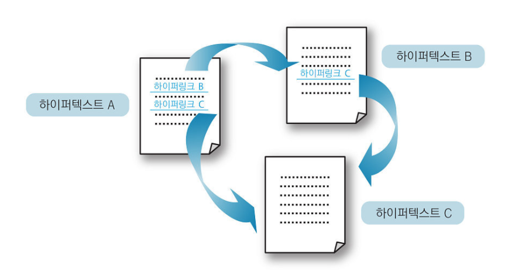
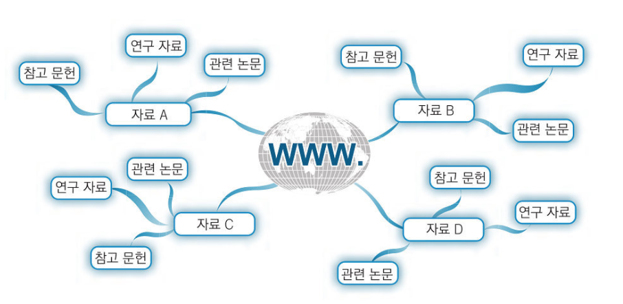
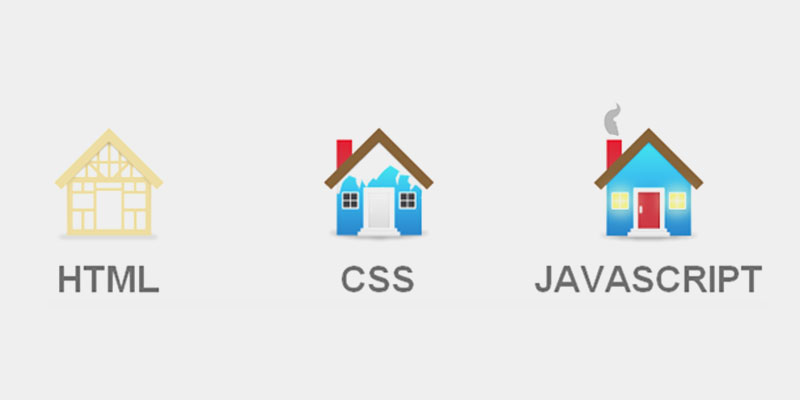
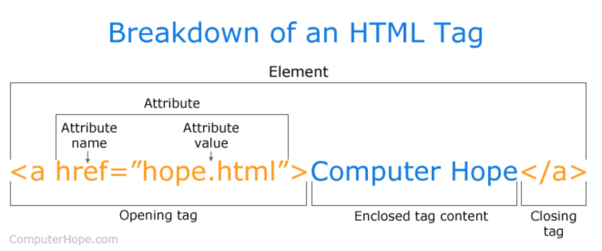
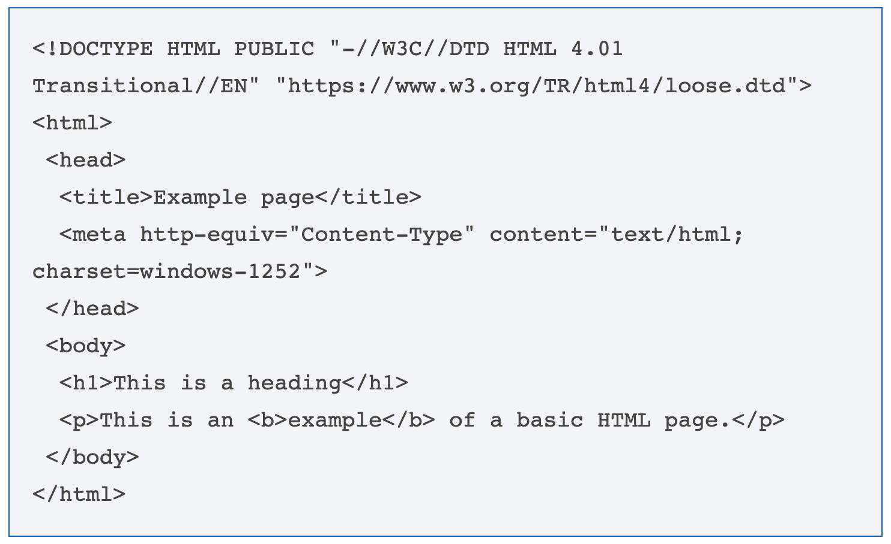
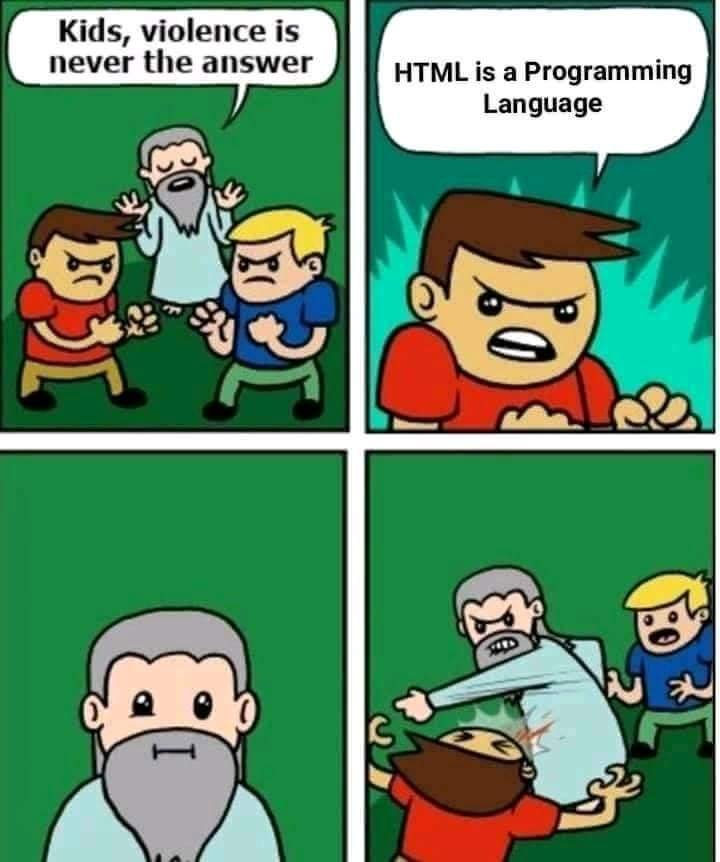

<!DOCTYPE html>
<html lang="en">
  <head>
    <meta charset="UTF-8" />
    <meta name="viewport" content="width=device-width, initial-scale=1.0" />
    <meta http-equiv="X-UA-Compatible" content="ie=edge" />
    <link rel="stylesheet" href="./css/style.css" />
    <link
      href="https://fonts.googleapis.com/css?family=Jua&display=swap"
      rel="stylesheet"
    />
    <title>SONY - 90년생 HTML</title>
  </head>
  <body>
    <section class="container">
      <header>
        <nav class="header-title">
          <a
            href="https://github.com/sonypark/html/tree/sonypark"
            target="_blank"
          >
            
          </a>
        </nav>
        <h1>90년생 HTML</h1>
      </header>

      <article class="post">
        <hr />
        <div>
          <li>
            <a href="#html-history">HTML 탄생 배경</a>
          </li>
          <li>
            <a href="#html-tag">HTML tag의 구성</a>
          </li>
          <li>
            <a href="#html-structure">HTML 구조</a>
          </li>
          <li>
            <a href="#html-not-programming-language"
              >HTML은 프로그래밍 언어인가?</a
            >
          </li>
        </div>
        <hr />

        <h2 id="html-history">HTML 탄생 배경</h2>

        <p>
          <a href="https://en.wikipedia.org/wiki/HTML">HTML</a>은 1990년 유럽
          입자 물리학 연구소(<a href="https://en.wikipedia.org/wiki/CERN"
            >CERN</a
          >)이라는 기관에서 연구를 하던 팀 버너스리(Tim Berners-Lee) 박사가 정보
          공유를 위해 개발 한 것이다. 팀 버너스리 박사는
          <a href="https://en.wikipedia.org/wiki/World_Wide_Web"
            >WWW(World Wide Web)</a
          >에 공유할 문서를 표현하기 위한 통일된 형식으로 HTML을 만들었다.
          HTML은 하이퍼 텍스트 마크업 랭귀지(Hypertext Markup Language)의
          약자이다. HTML로 작성되어 WWW에 올리는 전자 문서는 페이지(page)라고
          불린다.
        </p>

        <p>
          HTML의 하이퍼텍스트(Hypertext)라는 구조는 정말 획기적이었다.
          하이퍼텍스트로 작성된 문서에서는 하이퍼링크(hyperlink)를 문서간 참조가
          가능하다. 즉, 하이퍼링크를 통해 다른 페이지로 순식간에 이동이
          가능하다. 덕분에 기존에는 일일이 수작업으로 참조해야했던 논문과 참고
          문헌들을 클릭 몇 번으로 쉽게 참조할 수 있게 되었다.
        </p>

        

        <p>
          이와 같이 네트워크상에 연결된 하이퍼링크의 연결이 거미집과 유사하다고
          해서 월드 와이드 웹(World Wide Web)이라는이름이 붙었다.
        </p>

        

        <p>
          HTML 코드는 인터넷 브라우저에 적합한 텍스트와 이미지 포맷을 보장한다.
          HTML이 없다면 브라우저는 텍스트를 요소로서 표시하거나 이미지나 다른
          요소를 로드하는 방법을 알지 못할 것이다. HTML은 페이지의 기본 구조로
          CSS를 겹쳐 외관을 바꾼다. HTML을 웹 페이지의 뼈(구조)로, CSS를
          피부(외관)로 생각할 수 있다. 자바스크립트를 사용하면 동적으로 움직이게
          할 수 있다.
        </p>

        

        <h2 id="html-tag">HTML tag의 구성</h2>
        
        <p>
          위의 그림에서 볼 수 있듯이, HTML 태그의 구성요소의 많지 않다. 대부분의
          HTML 태그에는 태그 이름이 포함된 시작 태그, 태그 속성, 닫는 태그가
          있다.
        </p>

        <h2 id="html-structure">HTML의 구조</h2>
        

        <ol>
          <li>
            <b>!DOCTYPE</b> 부분은 문서 유형을 정의한다. 웹 브라우저가 페이지를
            어떻게 해석해야하는지 알려준다. (ex. &lt;!docify html html&gt; : 이
            페이지를 html로 해석하라.)
          </li>
          <li>
            <b>&lt;html&gt;</b> 태그는 브라우저가 HTML 코드를 읽고 있다는 것을
            알 수 있게 한다.
          </li>
          <li>
            <b>&lt;head&gt;</b> 태그는 titie, meta tags, css 파일 등 페이지에
            대한 정보를 담는다.
          </li>
          <li>
            <b>&lt;body&gt;</b> 태그는 페이지에 표시되는 모든 내용을 담는다.
          </li>
          <li><b>&lt;h1&gt;</b> 태그는 머릿말을 나타내는 태그이다.</li>
          <li><b>&lt;p&gt;</b> 태그는 글의 단락을 표시하는 태그이다.</li>
          <li><b>&lt;b&gt;</b> 태그는 텍스트를 굵게 bold 처리하는 태그이다.</li>
        </ol>

        <h2 id="html-not-programming-language">HTML은 프로그래밍 언어인가?</h2>
        <p>
          HTML은 프로그래밍 언어가 아니다. 웹사이트의 구조나 의미를 주기 위한
          내용을 주기 위해 사용되는 마크업 언어이다.
        </p>
        

        <div class="reference">
          <h2 id="reference-video">참고 영상</h2>
          <p>
            <iframe
              width="560"
              height="315"
              src="https://www.youtube.com/embed/OGFgdro160I"
              frameborder="0"
              allow="accelerometer; autoplay; encrypted-media; gyroscope; picture-in-picture"
              allowfullscreen="allowfullscreen"
            ></iframe>
          </p>

          <p>
            <iframe
              width="560"
              height="315"
              src="https://www.youtube.com/embed/ffENjt7aEdc"
              frameborder="0"
              allow="accelerometer; autoplay; encrypted-media; gyroscope; picture-in-picture"
              allowfullscreen="allowfullscreen"
            ></iframe>
          </p>
        </div>
      </article>

      <div class="comments">
        <div class="comment">
          <div class="author_name">woowa.crew</div>
          <input
            type="text"
            placeholder="댓글을 입력하세요"
            class="comment_input"
          />
          <button class="comment_input_submit">입력</button>
        </div>
      </div>
    </section>

    <footer class="footer"></footer>
  </body>
</html>
